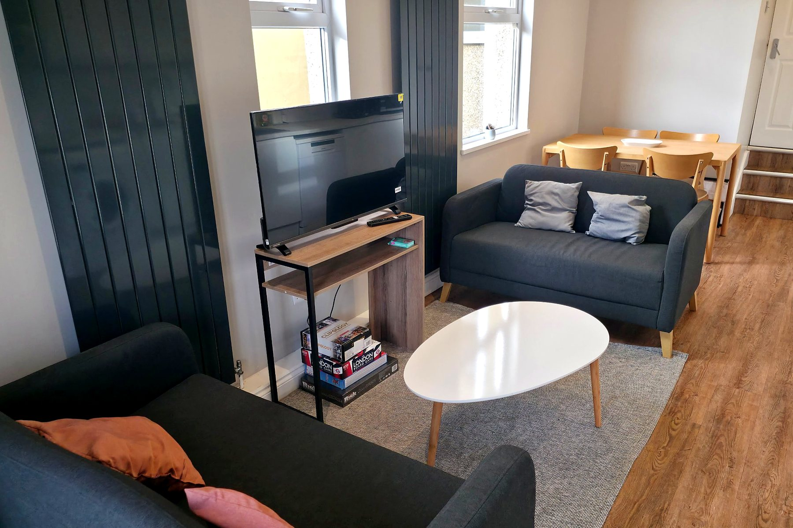

Our mission
To empower young people to develop the skills, confidence and resilience they need to thrive in adulthood.
We support care leavers and young people at risk of homelessness who need structured guidance, practical skills and consistent emotional support. We do this by combining safe accommodation, structured keywork and a strengths-based therapeutic approach.

Seven values we work by
How we work
Every member of our team is trained in Solution-Focused Brief Therapy (SFBT), with ongoing consultancy to keep practice consistent. It's built into every keywork session, routine and skill-building activity.
- Strengths-basedScaling, exception-finding and goal-setting tools.
- Trauma-informedPractice that promotes safety, trust and stability.
- Outcome-focusedProgress tracked and reported to local authorities.
- Multi-agencyClose work with social workers, health and education.
Our leadership
Over 10 years leading services for young people in the UK, and more than 25 years in health and social care.
Zarqa holds a qualification in Management in Health and Social Care and has extensive experience in regulated services. She oversees every placement, staff training, compliance and quality assurance, with specialist knowledge in safeguarding, risk management and youth development.
Nathan founded In House and leads its governance, HR, safer recruitment, compliance and safeguarding frameworks, with a focus on building a service culture where staff and young people thrive.